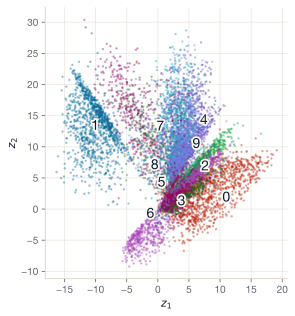
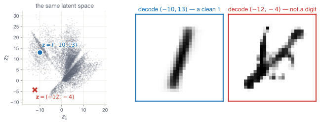
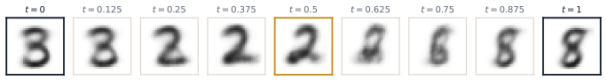

Lecture 7 — Autoencoders, VAEs, and a glance at diffusion
August 11, 2026
≈ 5 min · shout it out
Worked answers
‘My AI agent booked a gym class — by booting out someone else’
Copy-paste no more: Anthropic puts invisible watermarks on Claude text under EU rules
(I think you folks could code the latter up after today’s session!)
Discriminative
Estimate P(\mathbf{y} \mid \mathbf{X}).
Generative
Estimate P(\mathbf{X}) — and sample from it.
Generative modelling is harder – it’s a bigger ask. But it’s how we make new images, text, audio, molecules, and code.
CS / industry
Social science
A model that can sample from P(\mathbf{X}) – the data distribution itself – is also a model that:
Generative modelling is a richer object than discrimination. It is also harder to evaluate, which we’ll return to in Part 3.
Build up to generation, slowly, with a familiar task
Suppose we have 5-feature data and we want to compress to 2 dimensions.
Try Sketch a neural network that takes a 5-feature input and produces a 2-feature output. What’s the obvious architecture?
The natural shape A network with decreasing widths — 5 → 3 → 2. The end becomes a “bottleneck”.
But there’s a problem
We don’t observe them and they don’t exist in the dataset.
No labels = no loss = no backprop.
Use the input as its own target.
Train the network to reconstruct its input through a narrow bottleneck.
The smaller number of features in the middle force the model to learn a compressed representation.
Loss — how close is the reconstruction to the input?
\mathcal{L}_{\text{recon}}(\mathbf{x}, \hat{\mathbf{x}}) = \frac{1}{d} \sum_{j=1}^d (x_j - \hat{x}_j)^2
Here d is the number of features.
Still, we train end-to-end with backprop, just like any other network.
At inference time:
Deep networks are lazy!
Try What’s the easiest function for an autoencoder to learn?
The honest answer The identity function. Reconstruction loss = 0 when \hat{\mathbf{x}} = \mathbf{x}.
If the bottleneck isn’t tight enough, the model finds shortcuts and the latent space becomes uninformative.
The latent space has no structure we can sample from so the anything not in the training data is out-of-distribution.
A real AE: 784 → 128 → 32 → 2 → 32 → 128 → 784, trained on MNIST

Train the autoencoder, then run the 10,000 held-out digits through the encoder. Each image is now a point (z_1, z_2) — coloured by its label:
Clusters appear suggesting the model has found structure!
The clusters are uneven and elongated; they overlap near the origin, with gaps elsewhere.
The space outside the point cloud has never been seen by the decoder.
Ten epochs of Adam on the 60,000 training images; held-out reconstruction MSE 0.045.
Let’s try sample from the gaps

The blue point sits in the middle of the 1 cluster — the decoder turns it into a clean 1.
The red point sits in a gap and it returns garbage.
Note
An autoencoder’s latent space is a consequence of training. It happens to compress – it doesn’t necessarily mean it is sampleable.
The VAE will engineer the latent space into something we can sample from.
A first fix
Corrupt the input. Ask the model to reconstruct the clean version.
≈ 8 min · in pairs
A tiny autoencoder
Input: \mathbf{x} = \begin{bmatrix} 2 & 4 \end{bmatrix} (2 features).
Encoder: \mathbf{W}_e = \begin{bmatrix} 0.5 & -0.5 \end{bmatrix}, b_e = 0, identity activation.
So \mathbf{z} is a single number — a 2D-to-1D bottleneck.
Decoder: \mathbf{W}_d = \begin{bmatrix} 1 \\ 0.5 \end{bmatrix}, \mathbf{b}_d = \begin{bmatrix} 0 & 1 \end{bmatrix}, identity.
Compute:
Five minutes.
Encoder
\mathbf{z} = \mathbf{x} \mathbf{W}_e^\mathsf T + b_e = \begin{bmatrix} 2 & 4 \end{bmatrix} \begin{bmatrix} 0.5 \\ -0.5 \end{bmatrix} = (1) + (-2) = -1
Decoder
\hat{\mathbf{x}} = \mathbf{z} \mathbf{W}_d^\mathsf T + \mathbf{b}_d = -1 \begin{bmatrix} 1 & 0.5 \end{bmatrix} + \begin{bmatrix} 0 & 1 \end{bmatrix} = \begin{bmatrix} -1 & 0.5 \end{bmatrix}
Loss
\mathcal{L} = \tfrac{1}{2}\big[(2-(-1))^2 + (4 - 0.5)^2\big] = \tfrac{1}{2}[9 + 12.25] = 10.625
Tip
A poorly-fit autoencoder. Backprop would update both \mathbf{W}_e and \mathbf{W}_d to lower this. The mechanics are the same as last week — just a different output node and loss function.
Goal
A latent space such that:
Plain autoencoder
We only need to change three things
Change 1 — encoder output
Instead of a single point \mathbf{z}, the encoder outputs two vectors: a mean \boldsymbol{\mu} and a standard deviation \boldsymbol{\sigma}.
In practice the encoder emits \log \sigma^2 rather than \sigma — it keeps the variance positive and is numerically stabler.
Change 2 — sample, don’t pass
Instead of sending \boldsymbol{\mu} to the decoder, sample a \mathbf{z} from \mathcal{N}(\boldsymbol{\mu}, \boldsymbol{\sigma}^2) and decode that.
Change 3 — regularise the latent
Add a second loss term that pulls the encoder’s (\boldsymbol{\mu}, \boldsymbol{\sigma}) output towards \mathcal{N}(\mathbf{0}, \mathbf{I}) – so that any draw from a standard Gaussian is a plausible latent code.
Force the latent space to look like a standard Gaussian \mathcal{N}(\mathbf{0}, \mathbf{I}).
Now we can sample \mathbf{z} \sim \mathcal{N}(\mathbf{0}, \mathbf{I}), pass it through the decoder, and get a new example.
How does that look at the network level?
Introducing stochastic network components
Every part of the network is still a deterministic function of its inputs except the sampling step.
We meet it now because the VAE loss on the next slide is built from it.
KL divergence \text{KL}(p \,\|\, q) measures how different two probability distributions are.
The one closed form we need
For a 1-D Gaussian measured against the unit Gaussian \mathcal{N}(0, 1), the KL has a tidy closed form:
\text{KL}\!\left(\mathcal{N}(\mu, \sigma^2) \,\big\Vert\, \mathcal{N}(0, 1)\right) = \tfrac{1}{2}\big(\mu^2 + \sigma^2 - 1 - \ln \sigma^2\big)
Plug in \mu = 0.5 and \sigma = 0.3:
\text{KL} = \tfrac{1}{2}\big(0.25 + 0.09 - 1 + 2.408\big) = \tfrac{1}{2}(1.748) \approx 0.87
Note
We won’t derive this formula and you’re not expected to know how to. The key concept is that KL-divergence measures the “distance between two distributions”.
Two coins
For discrete distributions, KL is a weighted sum of log-ratios:
\text{KL}(P \,\|\, Q) = \sum_i p_i \ln \frac{p_i}{q_i}
Take a fair coin P = [0.5, 0.5] and a biased coin Q = [0.9, 0.1]:
\text{KL}(P \,\|\, Q) = 0.5 \ln\tfrac{0.5}{0.9} + 0.5 \ln\tfrac{0.5}{0.1} = -0.294 + 0.805 \approx 0.511 \text{ nats}
Swap the arguments and the answer changes:
\text{KL}(Q \,\|\, P) = 0.9 \ln\tfrac{0.9}{0.5} + 0.1 \ln\tfrac{0.1}{0.5} = 0.529 - 0.161 \approx 0.368 \text{ nats}
Different in each direction. That asymmetry is why we say divergence, not distance. A “nat” is one natural-log unit of information — base e’s answer to the bit.
Double check it still holds What is \text{KL}(P \,\|\, P)?
Answer Zero. Every ratio inside the log is \tfrac{0.5}{0.5} = 1, and \ln 1 = 0.
Since we’re using a normal distribution, the closed form is what we’ll use inside the VAE:
\text{KL}\!\left(\mathcal{N}(\mu, \sigma^2) \,\big\Vert\, \mathcal{N}(0, 1)\right) = \tfrac{1}{2}\big(\mu^2 + \sigma^2 - 1 - \ln \sigma^2\big)
This is just four arithmetic operations on the encoder’s own outputs:
Drifted mean
\mu = 1, \sigma = 1:
\tfrac{1}{2}(1 + 1 - 1 - \ln 1) = \tfrac{1}{2}(1) = 0.5
Right spread, wrong centre. Penalty: 0.5 nats.
On target
\mu = 0, \sigma = 1:
\tfrac{1}{2}(0 + 1 - 1 - 0) = 0
The encoder’s output is the unit Gaussian. No penalty.
\mathcal{L}_{\text{VAE}} = \underbrace{\mathcal{L}_{\text{recon}}(\mathbf{x}, \hat{\mathbf{x}})}_{\text{decoder does its job}} + \underbrace{\beta \cdot \text{KL}\!\left(\mathcal{N}(\boldsymbol{\mu}, \boldsymbol{\sigma}^2) \,\big\Vert\, \mathcal{N}(\mathbf{0}, \mathbf{I})\right)}_{\text{latent stays close to a unit Gaussian}}
Reconstruction term
Same as a plain autoencoder. Wants the decoded image to match the input.
KL term
The regulariser — the KL divergence we just met. Wants the encoder’s output distribution to look like a unit Gaussian.
Without it, the network ignores the latent variability — collapses back to a plain autoencoder.
Tip
The \beta weight (hyperparameter) trades off reconstruction quality vs latent space organisation.
\beta \to 0
KL term vanishes
\beta large
Reconstruction term is dwarfed
The trade-off
Higher \beta = smoother latent + blurrier samples.
The “\beta-VAE” literature (Higgins et al., 2017) shows that pushing \beta up has a side-effect: latent dimensions tend to disentangle — one dimension controls rotation, another lighting, etc.
A pain in the backpropagation
Problem
Sampling \mathbf{z} \sim \mathcal{N}(\boldsymbol{\mu}, \boldsymbol{\sigma}^2) is non-differentiable — you can’t backprop through “randomly draw a sample”.
Fix
Rewrite the sample as: \mathbf{z} = \boldsymbol{\mu} + \boldsymbol{\sigma} \odot \boldsymbol{\epsilon}, \quad \boldsymbol{\epsilon} \sim \mathcal{N}(\mathbf{0}, \mathbf{I})
This trick makes the entire model trainable with ordinary backprop.
Almost every modern generative model uses some version of it.
A toy example with concrete numbers
Setup
Step-by-step
Where the randomness sits
Step 1’s \epsilon is the only stochastic element. Once it’s drawn, everything else is deterministic
Sampling
Interpolation
Tip
Smooth interpolation is the signature of a well-trained VAE. It tells you the latent space is meaningful — not just a clever lookup table.
Interpolation with a real VAE — 2-D latent, trained on MNIST
Encode two real test images with a small trained VAE: a 3 becomes \mathbf{z}_A = (1.1, -0.9), an 8 becomes \mathbf{z}_B = (-1.0, -0.2). Decode nine points along the line \mathbf{z}(t) = (1-t)\,\mathbf{z}_A + t\,\mathbf{z}_B:

Two things to notice:
Every stop is a plausible digit. No garbage anywhere on the path — compare the plain autoencoder’s gap point earlier. This is the KL term at work: the whole region around the origin decodes to digits.
Notice halfway is a clean 2, and around t = 0.75 we pass a 6
Both codes sit within about one unit of the origin — compared to AE’s -15 to +30 span.
The classic faces result
Train a VAE on photos of faces. Then:
“Smiling” exists as a line in the latent space, which we can move along
Why the KL term makes this work
It packs the latents into one connected region around the origin, so lines between points stay on the data.
Generate a chosen digit
Sample \mathbf{z} \sim \mathcal{N}(\mathbf{0}, \mathbf{I}) and decode — you get a digit. You cannot ask for a 7. You sample and take what comes.
The fix is the conditional VAE (CVAE): concatenate the label y to the encoder input and to the decoder input. The decoder now learns “reconstruct an image of THIS digit”.
Everything else — the sampling, the reparameterisation, the two losses — is unchanged.
At generation time
The roles split: y carries which digit; \mathbf{z} carries how it is written — slant, stroke width, loop size. Sample ten \mathbf{z} values with y = 7 and you get ten different handwritten 7s.
Tip
If we replace the digit label with a (embedded) sentence of text, we can do text-to-image generation.
≈ 8 min · in pairs
The pieces of a VAE forward pass
Order these steps correctly for a single training step on a single image \mathbf{x}:
loss.backward().Discuss in pairs. Then we’ll line them up.
The correct order
loss.backward() — fills gradients across encoder + decoder.optimizer.step() — apply updates.Tip
Notice the forward pass is now stochastic (it samples). The backward pass is still deterministic — gradients flow through \boldsymbol{\mu}, \boldsymbol{\sigma} thanks to reparameterisation.
VAEs work and they sample, but their outputs are often blurry.
By 2020 two other families had taken over the cutting edge:
The idea
Two networks play a game:
When the discriminator can’t tell, the generator has learned the data distribution.
Why GANs lost steam
The 2014–2020 GAN era produced photorealistic images (StyleGAN, BigGAN, …). But after 2020, diffusion was simpler and worked better.
Denoising is easier than generation.
The forward process is fixed
Each reverse step is small
A generalisation of the denoising autoencoder
Denoising AE → diffusion model
Rather than “denoise in one shot”, we “denoise over T small steps”. The latter turns out to be more tractable.
The fitting algorithm, up close (Ho et al., 2020)
Two facts keep training affordable. First, you never run the noising chain. A sum of Gaussians is one bigger Gaussian, so there is a one-line shortcut to any step t:
\mathbf{x}_t = \sqrt{\bar{\alpha}_t}\,\mathbf{x}_0 + \sqrt{1 - \bar{\alpha}_t}\,\boldsymbol{\epsilon}, \qquad \boldsymbol{\epsilon} \sim \mathcal{N}(\mathbf{0}, \mathbf{I})
\bar{\alpha}_t slides from ≈1 to ≈0 on a fixed schedule. Early on (\bar{\alpha}_t = 0.99): \mathbf{x}_t = 0.995\,\mathbf{x}_0 + 0.1\,\boldsymbol{\epsilon}, mostly image. Late (\bar{\alpha}_t = 0.01): 0.1\,\mathbf{x}_0 + 0.995\,\boldsymbol{\epsilon}, mostly noise.
Second, one network handles every noise level — t goes in as an extra input. The whole loop:
This is the Lecture 5 loop with a different target: no adversary to balance, no KL term in the loss you compute. One training step costs one forward + backward pass — the same as yesterday’s CNN classifier.
Note
The cost is realised at sampling time. Generating one image runs the network T \approx 1{,}000 times in sequence. Hence we need fast samplers and/or diffusion chains run within autoencoder latent spaces (see Stable Diffusion).
How does “a cat wearing a top hat” become an image?
The diffusion model needs two inputs at each reverse step:
The model is trained to denoise while staying true to the text.
Same architecture; one extra input.
The text encoder is itself a (frozen) transformer. We come back to those on Day 10.
Stable Diffusion and Midjourney both have a guidance scale setting.
Training
Train one denoiser both with and without the caption: at random (say 10% of training steps), replace the caption with a blank. The model learns a conditional prediction and an unconditional one
Sampling
At each reverse step, run the model twice and “push” the prediction away from the unconditional one:
\hat{\epsilon} = \epsilon_{\text{uncond}} + s\,(\epsilon_{\text{cond}} - \epsilon_{\text{uncond}})
The difference \epsilon_{\text{cond}} - \epsilon_{\text{uncond}} is the part of the prediction the caption is responsible for. Setting s > 1 amplifies that part.
Suppose at one denoising step the two predictions are \epsilon_{\text{uncond}} = 0.2 and \epsilon_{\text{cond}} = 0.8.
s = 3:
\hat{\epsilon} = 0.2 + 3 \times (0.8 - 0.2) = 2.0
The caption moved the prediction by 0.6; guidance moves it by 1.8 by amplifying its influence three-fold.
s = 1
\hat{\epsilon} = 0.2 + 1 \times 0.6 = 0.8 = \epsilon_{\text{cond}}
Plain conditional generation — no amplification.
Warning
The dial has a cost. Very high s trades variety + realism for prompt-adherence. Stable Diffusion uses s = 7.5 as its default.
| Family | Year | Quality | Speed | Likelihood? | Used for |
|---|---|---|---|---|---|
| VAE | 2014 | Blurry | Fast | Approximate | Compression, anomaly detection, imputation |
| GAN | 2014 | Sharp | Fast | No | Faces (StyleGAN), inpainting |
| Diffusion | 2020 | Sharpest | Slow | Approximate (variational bound); exact via probability-flow ODE | DALL·E, Stable Diffusion, Sora |
| Autoregressive | — | Excellent for text | Token-by-token | Yes | GPT, Claude — Day 10 |
The VAE first appeared as an arXiv preprint in 2013 and was published at ICLR 2014; the GAN in 2014; diffusion (DDPM) in 2020.
There is no single best strategy
VAEs remain the right tool for many social-science applications (small data, need for likelihoods). Diffusion dominates image generation.
It depends on the shape of your data and what you need from the model.
Privacy
Fairness
Synthetic data also enables misuse
Deepfakes, non-consensual imagery, fabricated evidence.
Generative models are harder to evaluate than discriminative ones
Common approaches:
The “right” metric depends on the use case.
A model that’s good at reconstruction may be terrible at generating new samples. A model that’s good at sampling may have a misaligned latent space.
A live methods debate (Robinson & Zubok, 2026)
The tempting shortcut, “silicon sampling” (Argyle et al., 2023):
Conditional generation using a demographic profile — “a 52-year-old woman in Germany, secondary education, middle income…” — and record the survey answers it gives back.
Repeat 10,000 times: a “free” survey of any population
Before asking “is the model good enough?”, ask where the information would come from.
A generator fit to your own data can only re-use what your sample already holds.
An LLM imports from outside – whatever its training corpus says about people like the one in your prompt.
Try — 60 seconds Across countries, richer countries trust their police more. Does it follow that, within a country, richer people trust the police more?
Answer No — that is the ecological fallacy: a between-group pattern need not hold within groups. In ~700,000 harmonised ESS/WVS responses, the within-country correlation of household income with trust in police is 0.03. Across country averages it is 0.48.
Ask an LLM for survey respondents country by country, and its respondents show a within-country correlation of 0.49 – the between-country value, stamped onto individuals.
The model builds each fake person from the country profile, so group-level patterns bleed into individual-level observations.
A checklist for your own projects
Judged against the thing you want to estimate, a generator can do one of three things:
Recover information your incomplete data already identify
Re-express a sample you already hold – automating a simulation you could have specified by hand. Convenient, but never informative
Distort — by importing the wrong population, as silicon sampling does.
The output looks equally plausible in all three cases.
Three rules of thumb
LLMs are fine where only plausibility matters: pretesting questions, personas, piloting open-ended text.
For estimation, synthetic output enters only when disciplined by real data.
Synthetic media is no longer a research curiosity
The architecture you’ll train in the lab is a (much smaller) version of what produces:
Non-consensual deepfake imagery — Disproportionately affects women, including teenagers
AI-generated political ads
Fabricated evidence
Identity-laundering
There are also enormous legitimate uses:
Where you are at the end of Day 7
You can:
Goals
Train a small VAE on MNIST and generate new digits.
You will:
Stretch goal
Interpolate between two MNIST digits in latent space. Plot the morph as a grid of 10 images.
The smoothness of this morph is the most satisfying visual confirmation that the VAE has learned a meaningful latent space.
Lecture 8 — Word embeddings & character models (1/4)
We leave images behind and turn to text. We’ll ask how a network can turn a word into a vector — a word embedding — and build our first character-level model that generates text one letter at a time. It’s the first of four lectures that build, step by step, towards a working GPT.
Tip
Optional reading tonight. Andrej Karpathy, The Unreasonable Effectiveness of Recurrent Neural Networks — a 2015 blog post that’s still the best introduction to next-character generation.
ME324 · AI and Deep Learning · LSE Summer School
Social-science application — MIDAS
Lall & Robinson (2022) — The MIDAS Touch: Accurate and Scalable Missing-Data Imputation with Deep Learning.
Empirically — more accurate than MICE on most datasets, dramatically faster on large ones, and handles time-series + mixed data types.
Tip
The pipeline you’ve now seen all the pieces for: